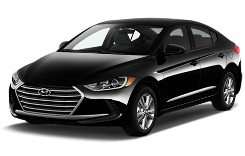

Black River Falls, Wisconsin
When your car is in the shop after an accident or other insurance claim, you still have to get to work, school, and everywhere else. Riverside Auto Rental provides insurance replacement rentals in Black River Falls, serving Jackson County and drivers near Tomah. In most cases we bill your insurance company directly, and we can often have you in a vehicle the same day. We've been family-owned since 1983.

The Process
Call your insurance company and get a claim number. While you're on the phone, ask whether your policy includes rental reimbursement and what the daily limit is. If a body shop is handling your repair, it can call us for you.
Tell us you need an insurance replacement rental, and give us your insurance company's name, your claim number, your adjuster's name and direct phone number, and when you need the vehicle. "Today" often works. See what to do after an accident.
We work directly with adjusters from most major carriers. We'll call your adjuster to verify direct billing and confirm the vehicle class, and we'll have the vehicle ready when you arrive. Insurance replacement rates are quoted by phone and billed directly to the adjuster or shop. They're separate from our posted daily and weekly rates.
We match the replacement vehicle to what your policy covers and what your adjuster recommends. A higher rental allowance may let you move up to a full-size car or a minivan. If you want a larger vehicle than your coverage includes, you can pay the difference to upgrade.
Bring the items under "What to Bring" below. You'll leave a refundable security deposit that starts at $300 and is confirmed when you book. Insurance covers the rental itself.
When your vehicle is repaired, the shop calls us and we coordinate the swap. If your repair runs long, we'll coordinate the extension with your adjuster.
Coverage
Only your insurance company can tell you what your policy covers. Rental coverage depends on your policy, who was at fault, and what your insurer approves, including how many days and what daily amount are covered. Many policies cap rental reimbursement at 30 days. Before you pick up a rental, ask your insurer: Is rental coverage included? For how many days? Up to what daily amount? If your policy doesn't include rental coverage, you can still rent from us at our regular daily and weekly rates.
A plain-language checklist is in does your insurance cover a rental? If the car is a total loss, Riverside Auto Sales is in the same building — a separate business from the rental company.
Vehicles
Depending on your coverage and what's available, we offer:
Most insurance replacement rentals last between 5 and 30 days, and some run longer for major collision repairs or parts delays. Not renting through insurance? We also offer daily, weekly, and long-term rentals, plus Ford Edge SUVs and an all-wheel-drive Subaru Outback. See our rental fleet and rates and weekly rental rates. Long-term rentals are quoted by phone — contact us.
Service Area
We're at N5856 WI-54 in Black River Falls, a short drive from I-94 Exit 116. That's an easy stop for drivers in Jackson County, and about 30 minutes from Tomah on I-94 West. We work with body shops and adjusters in Black River Falls, Tomah, Sparta, Neillsville, Warrens, Melrose, Osseo, and surrounding western Wisconsin communities. See rentals near Tomah.
Adjusters and body shops can also read notes for referrals. Same-day pickup is covered in same-day insurance replacement rentals. Before you rely on your own policy, read what to check with your insurer.
Pickup
Renters must be 21 or older. Full details are in what you need to rent a car and deposits, debit cards, and the 3% surcharge.
Visit
Questions
An insurance replacement rental is a rental vehicle you use while your own vehicle is being repaired after an insurance claim. Depending on your policy and your claim, your insurer may cover some or all of the cost.
In most cases, yes. We work directly with adjusters from most major carriers and bill them for the rental. We'll call your adjuster to verify direct billing. You're responsible only for the security deposit, which starts at $300 and is confirmed when you book. The deposit is refunded when you return the vehicle.
Your claim number, your insurance company's name, your adjuster's name and phone number, a valid U.S. driver's license, and proof of auto insurance. A security deposit, starting at $300, is held separately from your rental charges on a credit or debit card (Visa, Mastercard, or Discover; no Amex). We'll confirm the exact amount when you book. We do not accept checks.
Usually, yes. Call early in the day with your claim number ready and we can usually have a vehicle for you within hours. Same-day Saturday rentals are possible if you call before noon.
We match the vehicle class to what your insurer has authorized and what's available. Standard replacement vehicles are intermediate cars, full-size cars, and 7-passenger minivans. A 15-passenger van is available when the claim involves a larger group or family vehicle. If you want a larger vehicle than your insurer authorized, you can pay the difference to upgrade.
Most policies cap rental reimbursement at 30 days. We coordinate with your adjuster on extensions if your repair runs long. Call us at 715-396-1466.
Call 715-396-1466. We'll coordinate directly with the insurance company and get your customer into a vehicle quickly so the repair can start.
Call or text Riverside Auto Rental at 715-396-1466 with your claim number, and we'll help you get set up, often the same day. Open Monday–Friday 8:00 AM–5:00 PM, Saturday 8:00 AM–noon, and Sunday closed. After-hours drop-off returns are available.
Call 715-396-1466 Text Us